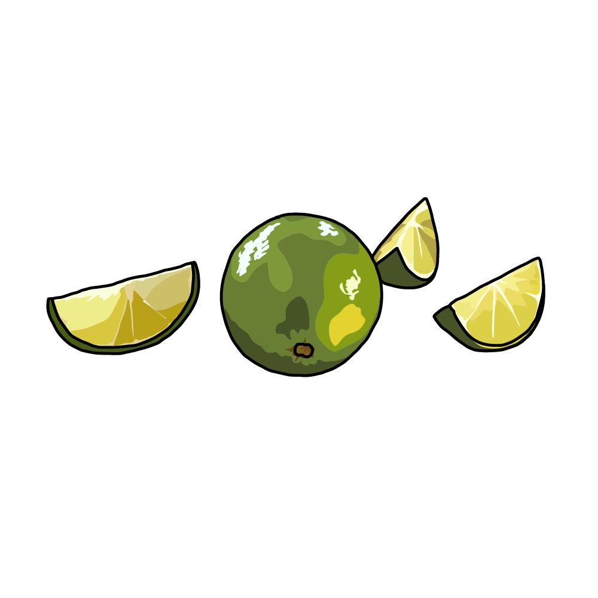

Sicilian Lemon
(citrus × limon)
Sicilian Lemon
It has a thick, yellow peel, an extremely acidic flavor, and is rich in juice. It is often used in cooking, baking, and cocktails.
Meyer Lemon
(citrus × meyeri)
Meyer Lemon
Less acidic and more sweet, hinting at a lemon and tangerine blend. Popular in desserts, sauces, and beverages.

Galego Lemon
(citrus × aurantiifolia)
Galego Lemon
Smaller in size and a distinctive flavor. It is widely used for making juices, marinades, and Brazilian dishes.

Tahiti Lemon
(citrus × latifolia)
Tahiti Lemon
Its flavor is milder and less acidic, making it a favorite in cocktails and dishes that require a more subtle citrus touch.